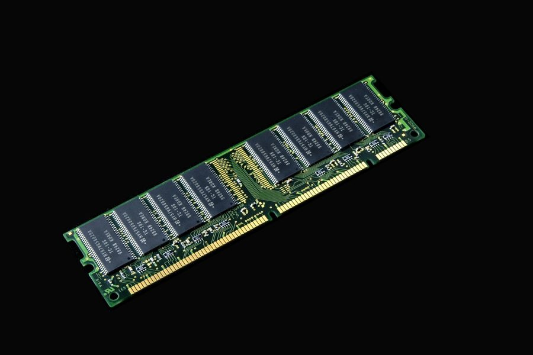

01
삼성전자와 머스크의 반도체 동맹
경제텍사스 공장 무인화와 반도체 장기 공급 협력

이재용 삼성전자 회장과 일론 머스크 테슬라 CEO가 만나 반도체 공급을 포함한 광범위한 협력 방안을 논의했습니다. 세계 최대 반도체 기업과 전기차 리더의 만남이라는 점에서 시장의 기대감이 큽니다.
특히 삼성은 미국 텍사스 공장에 5조 원 규모의 투자를 단행하고, 로봇 전담 팀을 구성해 공장 무인화를 가속화하고 있습니다. 이는 생산 효율성을 극대화하여 테슬라 등 빅테크 기업의 요구에 부응하려는 전략으로 풀이됩니다.
앞으로 삼성이 테슬라의 자율주행 칩 생산 물량을 얼마나 더 확보하며 견고한 동맹을 이어갈지가 관전 포인트입니다.
참고: 매일경제, 연합뉴스, 한국경제